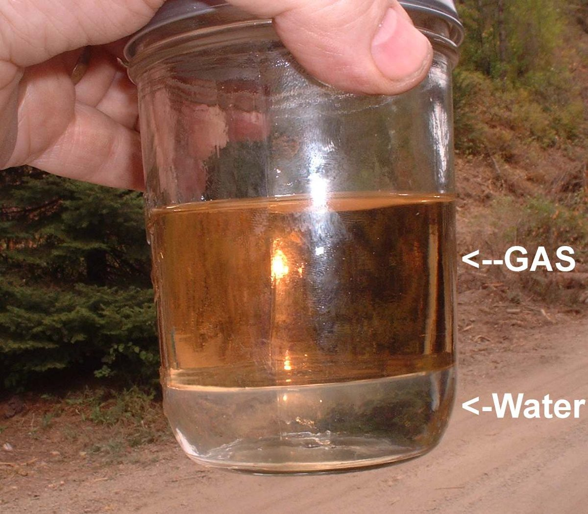
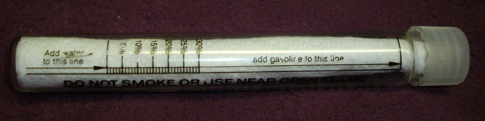
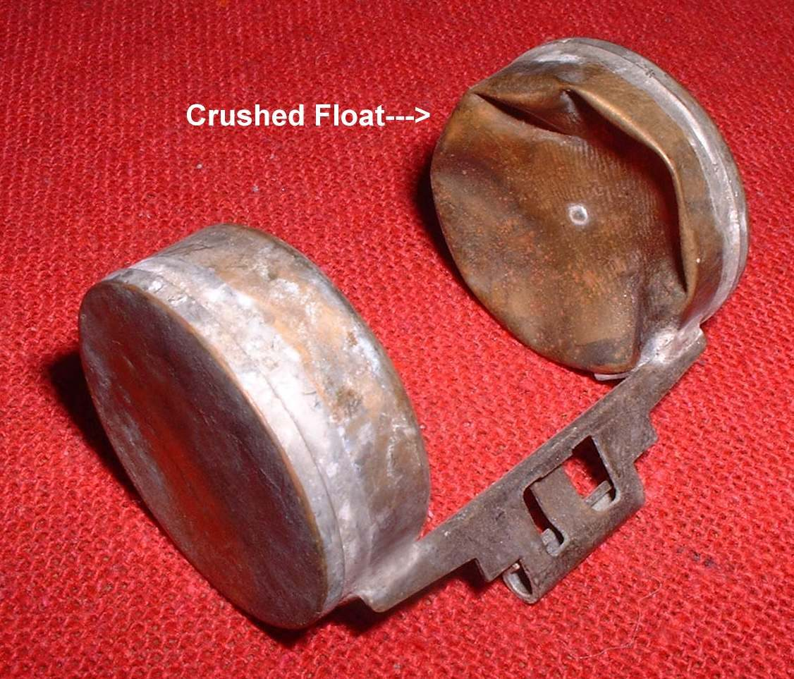

Water and dirt get into fuel from a bad fuel source, from condensation in a half-empty tank, through a leaking cap seal, or from washing. Water is heavier than petrol, so it sinks to the bottom of the tank, where the tap or pump picks it up. Small drops make the engine misfire, stutter or cut out; a slug of water stops it. Dirt and rust block filters and jets. Fuel sold mixed with kerosene or other oils also causes poor running and smoke.
Is it safe to ride?
No, not until the fuel is drained. The engine can stop without warning in traffic, and water damages fuel pumps and injectors.
Quick checks first
- Did the problem start just after filling up, or after heavy rain or washing?
- Is the fuel cap seal whole?
- Is the inline filter (if see-through) showing water drops or dirt?
- Does the fuel smell normal, or of kerosene or paint?
- Fuel with alcohol takes up water. Test a sample with a shake test if you suspect ethanol blend fuel.
- On a two-stroke with pre-mix oil, water settles at the bottom of the tank and alcohol joins it. That layer has no oil. If it reaches the engine, the crank and piston run without lubrication.
- Water in a metal float or carburettor can freeze and crush a float in cold weather.
Diagnose it step by step
1Drain a sample from the lowest point into a clean, clear glass jar and let it stand for a minute. What do you see?
- Clear bubbles or a separate clear layer at the bottom: water. Go to step 2.
- Brown or orange flakes: rust. Go to step 2, then see Rust or flakes inside the fuel tank.
- Sand or grit: dirt. Go to step 2.
- Clean fuel, but dark, sour or varnish-smelling: see Old or stale fuel.
- Clean, normal fuel: the fuel is probably fine. Look elsewhere, for example Cuts out randomly.
2Drain the whole tank and the carburettor float bowl.
- Drain old or contaminated fuel. Swirl a little fresh fuel in the tank and drain again until it comes out clean.
3Are the filter, tap strainer or sediment bowl dirty or wet?
- Yes: clean or replace them: Replace the fuel filter and Check the fuel tap, lines and flow.
4Carburettor: refill with fresh fuel. Does it run cleanly?
- Yes: done. Keep watching the filter for a few tanks.
- No: water or dirt is still in the jets. Clean the carburettor.
5Fuel-injected: after draining and fresh fuel, does it run cleanly?
- No: the in-tank pump strainer or the injector may hold water or dirt. Workshop: Check the fuel pump and Check the fuel injector.
6Find how it got in, so it does not happen again.
- Cap seal cracked or vent passage letting rain in: Clean and lubricate the fuel cap.
- Rust in the tank: Remove rust from a fuel tank.
- Fuel source: buy from busy stations, and avoid fuel from open containers. Use the grade your manual asks for (K-Light 125: unleaded 92 or 95).
Causes, most likely first
| Cause | How to confirm | Fix |
|---|---|---|
| Bad fuel source | Started after a fill-up | Drain fuel |
| Condensation in a part-empty tank | Bike stood with little fuel | Drain fuel |
| Leaking cap seal, washing water | Cracked seal, after washing | Fuel cap |
| Rust from the tank | Orange flakes | Tank rust |
| Dirt in jets or injector after draining | Still runs badly | Clean carburettor |